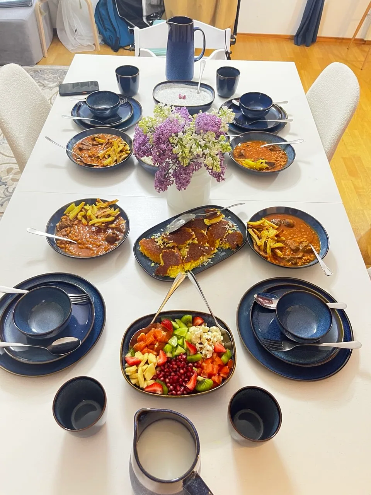

Good things happen around a table.
02 / THE PERSON BEHIND THE PLATE
Persian roots.
A curious kitchen.
Hello, I’m Hanieh.
Taste Tale Studio is my little corner of the food world, here in Vaasa, Finland. A place for the dishes I love, the cakes I create, and the new flavours I’m exploring along the way.
From the golden crust of a tahchin to a butter with an unexpected twist, I love the small details that make food feel personal.
A familiar flavour. A new idea.
One more reason to gather.